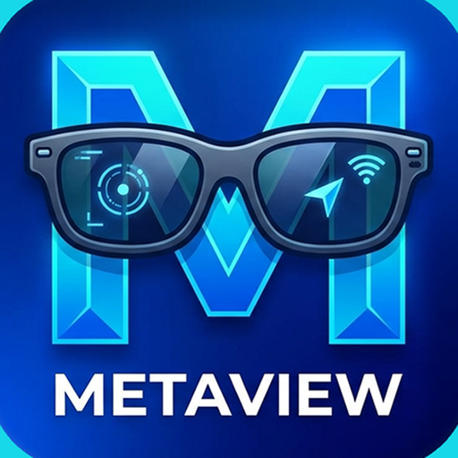

Version 1.0.0 · for registered iPhones only. Open this page in Safari.
If iOS says Developer Mode is required: Settings → Privacy & Security →
Developer Mode → On, then restart.
For the glasses: in the Meta AI app turn on Developer Mode, then open MetaView and tap Connect.